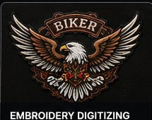
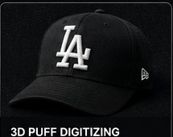
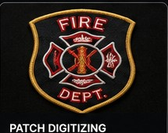
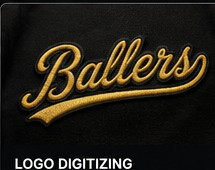
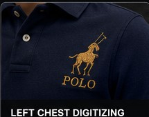
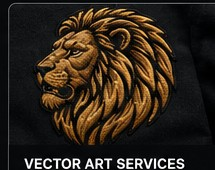

Different placements fail in different ways — a cap curves, a jacket back has to hold coverage, small text closes up if density is wrong. Every service below is handled by digitizers who work that placement daily.

Send a blurry logo, a phone photo, or a low-res PNG — we redraw it as a scalable vector file with clean paths, so it prints and stitches sharp at any size.

Left chest logos have the least room for error — dense detail packed into a few square inches. We adjust stitch density and underlay so small elements stay legible instead of filling in.

Large-format designs need underlay and stitch sequencing that keep fabric from puckering across a big run. We build jacket backs to hold detail edge to edge without distortion.

A flat digitized file distorts on a curved cap panel. We digitize with curvature compensation built in, so the design reads correctly once it's actually on the hoop.

3D puff needs precise foam underlay and satin density or the edges collapse. We build files specifically for foam-backed caps so the raised effect stays crisp.

Tight text closes up fast on dense fabric. We digitize small lettering with adjusted stitch spacing so it stays readable instead of turning into a solid blob of thread.
Send it over — we'll tell you the right placement and price before you order.